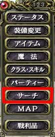

目次
>
ゲームについて
>
日本Falcom攻略
>
Sorcerian Online
>
チュートリアル
>
コミュニケーション
Sorcerian Online
|
概要
|
チュートリアル
|
|
コミュニケーション に戻る
|
ギルド
ギルドを作る
ギルドに誘う
ギルドに所属する
ギルドチャット
活動するギルド(アクティブなギルド)を選ぶ
ギルドメンバー
ギルドを解散する
ギルドを作る
ギルドは誰もが作ることができます。
メニュー2ページ目の「
ギルド
」から、「
ギルド創設
」を選択してください。次にどれでもいいので「
空のスロット
」を選択しエンターキーを押すとギルド名を入力するウィンドウが出ます。
ここでギルド名を入力し、エンターキーを押すと確認のダイアログが出ます。ここでOK を押すことでギルドを作ることができます。
(左：メニュー 右：ギルド創設)
(空のスロットを選ぶ)
ギルドに誘う
他のプレイヤーをギルドに誘うことができるのは、
ギルドマスターだけ
です。
ギルドに誘うためには
誘いたいプレイヤーを検索
しなければなりません。メニュー1ページ目の「
サーチ
」から「
プレイヤーサーチ
」を選択する、もしくは「
P
」キーを押すことでプレイヤー検索ウィンドウを開きます。
次にTabキーを押して、「
プレイヤー名
」を選び、誘いたいプレイヤー名を入力します。全て入力する必要はなく、
頭2文字程度でも十分
です。
最後にプレイヤー検索で誘いたいプレイヤーを選び、エンターを押し「
ギルドに誘う
」を選ぶことで相手を誘うことができます。これでギルドに誘うことはできますが、
誘った相手がギルドに所属してくれるかどうかは相手の判断にゆだねられます
。

(メニュー)
(ギルドに誘う を選択)
ギルドに所属する
当然の事ながら、
ギルドに所属するためにはギルドに誘われなければなりません
。
何らかの方法でギルドに誘われたら、メニュー2ページ目の「
ギルド
」から「
ギルドに参加する
」もしくは「
ギルドに参加しない
」のどちらかを選んでください。これによりギルドに所属することになります。
初めてギルドに入るプレイヤーは自動的に所属したギルドがアクティブ(活動するギルド)に設定され、すでに別なギルドに入っているプレイヤーは
アクティブなギルドに設定されません
。
ギルドに誘ってもらうためには、勧誘しているプレイヤーに実際に声を掛けるしかありません
。そのため待っているだけではダメです。
(左：メニュー 右：参加の是非)
ギルドチャット
ギルドチャット文字は
水色
で表示され、聞こえる対象は自分が活動しているギルドメンバー全てです。それ以外のプレイヤーに伝わることはなく、どのマップに他のメンバーがいても聞こえます。
コントロールキー(Ctrl)＋スペースキーで「:guild 」までが自動的に入力されます。
コマンドとして入力する場合は、「
:guild
」もしくは「
:g
」を使います。
例)Adobe がギルドメンバーに対して「こんにちは」という
:g こんにちは
この場合、メッセージウィンドウには
[Adobe] こんにちは
と表示されます。
なお、ギルドチャットでメッセージが伝わるプレイヤーは、
アクティブなギルド(活動しているギルド)に設定しあるギルドのみ
です。そのため複数のギルドに所属している状態でも、アクティブに設定したギルド以外のメンバーとはこの方法で情報をやりとりできません。
活動するギルド(アクティブなギルド)を選ぶ
複数のギルドに所属しているプレイヤーは活動するギルドを選ばなければなりません。これをゲームの中では「
アクティブなギルドを設定する
」と言います。
メニュー2ページ目の「
ギルド
」から「
ギルドスロット
」を選択します。そして、アクティブにしたい(活動したい)ギルドを選びエンターを押すことでアクティブなギルドに設定できます。
ギルドの名前が
緑色
なのが
アクティブなギルド
で、ギルドの名前が白なのがアクティブでないギルドです。
アクティブに設定
していない
ギルドとは
ギルドチャットでメッセージが表示されません
。また
メンバーリストにも自分の情報が表示されません
。ちなみにメンバーリストは「ギルド」から「メンバーリスト」を選択するか、「
U
」キーを押すことで表示されます。
(左：メニュー 右：ギルドスロット)
(上がアクティブなギルド、下がアクティブでないギルド)
ギルドメンバー
メニュー2ページ目の「
ギルド
」から「
メンバーリスト
」を選択する、もしくは「
U
」キーを押すことで自分が活動しているギルドメンバーの状態を見ることができます。
なお表示されるメンバーは、
そのギルドをアクティブに設定しており、なおかつゲームにサインインしているプレイヤーのみ
です。つまりアクティブに設定していないプレイヤーはたとえゲームにサインインしていても表示されません。
(左：メニュー 右：メンバーリスト)
(一番上のプレイヤー以外はサインインしていない、もしくはアクティブではない状態にある)
ギルドを解散する
ギルドを解散できるのはギルドマスターのみです。
メニュー2ページ目の「
ギルド
」から「
ギルドスロット
」を選び、
解散したいギルドを一度アクティブにします
。それから、再度エンターキーを押し「
ギルド解散
」を選んでください。
例えアクティブなメンバーがいようともギルドはいつでも解散できます。
(左：メニュー 右：ギルドスロット)
|
コミュニケーション に戻る
|
|
概要
|
チュートリアル
|
Sorcerian Online
|
目次へ戻る
|
ページの上部へ
|